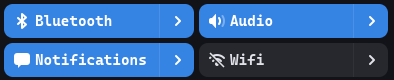

Class
KompassArrowButton
Description [src]
class Kompass.ArrowButton : Gtk.Box
{
/* No available fields */
}A button with an attached arrow as a secondary button. Eg clicking the main button could toggle bluetooth and clicking the arrow opens the bluetooth settings.

CSS nodes
KompassArrowButton‘s CSS node is called arrow-button. The active class is controled by the active property.
Instance methods
Methods inherited from GtkBox (13)
gtk_box_append
Adds a child at the end.
gtk_box_get_baseline_child
Gets the value set by gtk_box_set_baseline_child().
gtk_box_get_baseline_position
Gets the value set by gtk_box_set_baseline_position().
gtk_box_get_homogeneous
Returns whether the box is homogeneous.
gtk_box_get_spacing
Gets the value set by gtk_box_set_spacing().
gtk_box_insert_child_after
Inserts a child at a specific position.
gtk_box_prepend
Adds a child at the beginning.
gtk_box_remove
Removes a child widget from the box.
gtk_box_reorder_child_after
Moves a child to a different position.
gtk_box_set_baseline_child
Sets the baseline child of a box.
gtk_box_set_baseline_position
Sets the baseline position of a box.
gtk_box_set_homogeneous
Sets whether or not all children are given equal space in the box.
gtk_box_set_spacing
Sets the number of pixels to place between children.
Properties
Kompass.ArrowButton:inactive
The inverse of KompassArrowButton:active. This is useful because eg blueprint does not suport the inverted flag for nested
bidirectional property bindings.
Properties inherited from GtkBox (4)
Gtk.Box:baseline-child
The position of the child that determines the baseline.
Gtk.Box:baseline-position
How to position baseline-aligned widgets if extra space is available.
Gtk.Box:homogeneous
Whether the children should all be the same size.
Gtk.Box:spacing
The amount of space between children.
Properties inherited from GtkWidget (35)
Gtk.Widget:can-focus
Whether the widget or any of its descendents can accept the input focus.
Gtk.Widget:can-target
Whether the widget can receive pointer events.
Gtk.Widget:css-classes
A list of css classes applied to this widget.
Gtk.Widget:css-name
The name of this widget in the CSS tree.
Gtk.Widget:cursor
The cursor used by widget.
Gtk.Widget:focus-on-click
Whether the widget should grab focus when it is clicked with the mouse.
Gtk.Widget:focusable
Whether this widget itself will accept the input focus.
Gtk.Widget:halign
How to distribute horizontal space if widget gets extra space.
Gtk.Widget:has-default
Whether the widget is the default widget.
Gtk.Widget:has-focus
Whether the widget has the input focus.
Gtk.Widget:has-tooltip
Enables or disables the emission of the GtkWidget::query-tooltip
signal on widget.
Gtk.Widget:height-request
Overrides for height request of the widget.
Gtk.Widget:hexpand
Whether to expand horizontally.
Gtk.Widget:hexpand-set
Whether to use the hexpand property.
Gtk.Widget:layout-manager
The GtkLayoutManager instance to use to compute
the preferred size of the widget, and allocate its children.
Gtk.Widget:limit-events
Makes this widget act like a modal dialog, with respect to event delivery.
Gtk.Widget:margin-bottom
Margin on bottom side of widget.
Gtk.Widget:margin-end
Margin on end of widget, horizontally.
Gtk.Widget:margin-start
Margin on start of widget, horizontally.
Gtk.Widget:margin-top
Margin on top side of widget.
Gtk.Widget:name
The name of the widget.
Gtk.Widget:opacity
The requested opacity of the widget.
Gtk.Widget:overflow
How content outside the widget’s content area is treated.
Gtk.Widget:parent
The parent widget of this widget.
Gtk.Widget:receives-default
Whether the widget will receive the default action when it is focused.
Gtk.Widget:root
The GtkRoot widget of the widget tree containing this widget.
Gtk.Widget:scale-factor
The scale factor of the widget.
Gtk.Widget:sensitive
Whether the widget responds to input.
Gtk.Widget:tooltip-markup
Sets the text of tooltip to be the given string, which is marked up with Pango markup.
Gtk.Widget:tooltip-text
Sets the text of tooltip to be the given string.
Gtk.Widget:valign
How to distribute vertical space if widget gets extra space.
Gtk.Widget:vexpand
Whether to expand vertically.
Gtk.Widget:vexpand-set
Whether to use the vexpand property.
Gtk.Widget:visible
Whether the widget is visible.
Gtk.Widget:width-request
Overrides for width request of the widget.
Signals
Signals inherited from GtkWidget (13)
GtkWidget::destroy
Signals that all holders of a reference to the widget should release the reference that they hold.
GtkWidget::direction-changed
Emitted when the text direction of a widget changes.
GtkWidget::hide
Emitted when widget is hidden.
GtkWidget::keynav-failed
Emitted if keyboard navigation fails.
GtkWidget::map
Emitted when widget is going to be mapped.
GtkWidget::mnemonic-activate
Emitted when a widget is activated via a mnemonic.
GtkWidget::move-focus
Emitted when the focus is moved.
GtkWidget::query-tooltip
Emitted when the widget’s tooltip is about to be shown.
GtkWidget::realize
Emitted when widget is associated with a GdkSurface.
GtkWidget::show
Emitted when widget is shown.
GtkWidget::state-flags-changed
Emitted when the widget state changes.
GtkWidget::unmap
Emitted when widget is going to be unmapped.
GtkWidget::unrealize
Emitted when the GdkSurface associated with widget is destroyed.
Signals inherited from GObject (1)
GObject::notify
The notify signal is emitted on an object when one of its properties has its value set through g_object_set_property(), g_object_set(), et al.